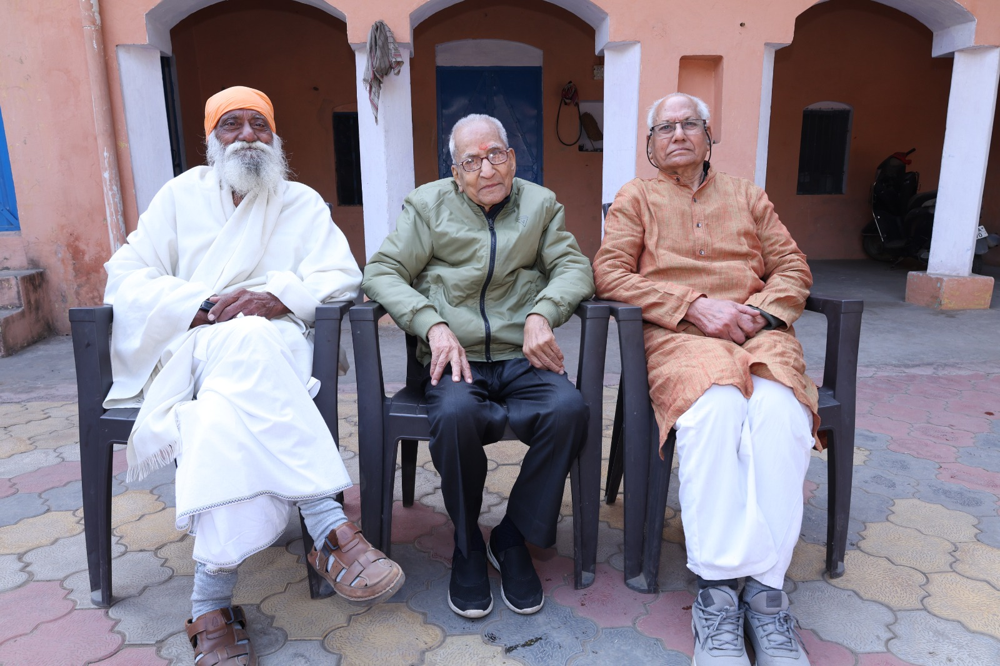
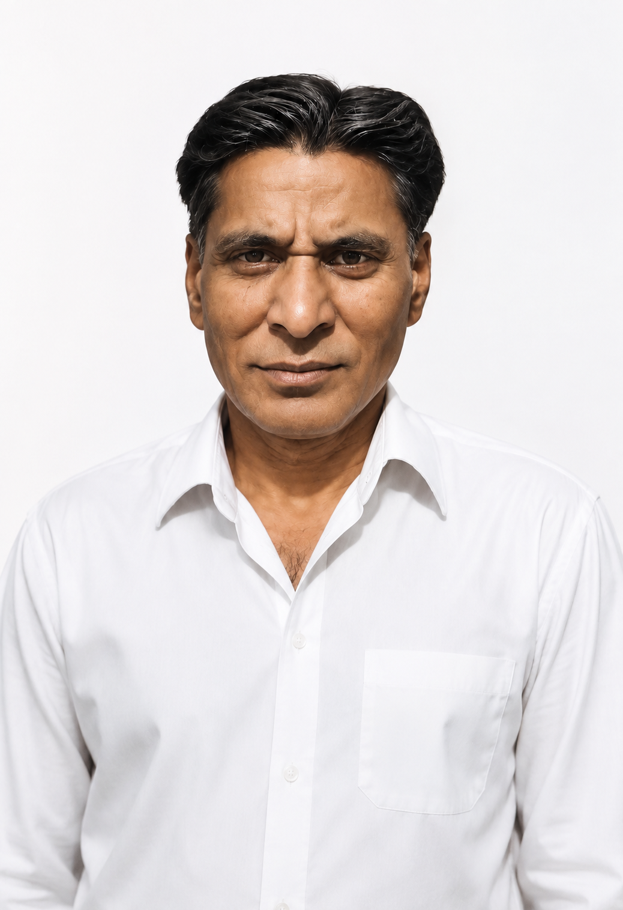

Our Story
The Ram Pyari Kundan Lal Mahajan Charitable Trust was founded to honour the memory of Late Shri Kundanlal Mahajan, whose extraordinary courage and selfless sacrifice during the 1947 tribal invasion of Jammu & Kashmir continue to inspire generations.
To carry forward his legacy of service, the Trust established the Ram Pyari Kundan Lal Mahajan Skill Development Centre at Shukartal, Muzaffarnagar. In partnership with Drishti Computer Education and Youth Skill Development & Research Institute, the centre provides free Computer and Sewing & Tailoring courses for youth, women, and economically weaker sections of society.
We believe that education and skill development create opportunities, promote self-reliance, and transform lives. Every student we empower is a tribute to the values of courage, compassion, and service that Shri Kundanlal Mahajan embodied.
"His courage lives on through every life empowered, every skill learned, and every act of selfless service."

A Father's Legacy
"His dedication and sacrifice became the foundation upon which we built our lives."

Founder
I am Ved Prakash Gupta, a native of Ali Beg, District Mirpur (PoK).
During the tribal invasion of 1947, my late father, Shri Kundan Lal, made the supreme sacrifice while protecting the honour of a young girl. After his martyrdom, our family came to Delhi as refugees. Through hard work, perseverance, and the support of my elder brother, we rebuilt our lives and ensured that every member of our family was educated and settled.
One day, while sitting quietly in my room, I experienced a profound inner calling to do something meaningful in my father's memory and for the welfare of society. I accepted this as a divine inspiration and a responsibility to dedicate the remaining years of my life to serving others.
With the wholehearted support of my family, I established this charitable trust and our Skill Development Centre, which provides free computer education and sewing training to help youth and women become self-reliant.
I humbly invite everyone to join us in carrying forward the ideals of courage, compassion, sacrifice, and selfless service.
With sincere gratitude,
Ved Prakash Gupta
Founder Trustee
What drives us
To equip rural women and unemployed youth with certified, job-ready skills that create real, lasting income.
Small batches, hands-on training, and close mentorship — every student is tracked from enrolment to placement.
Every graduate receives a certificate co-issued with our training partner Drishti, recognised by employers.

Certification Partner
We partner with Drishti to certify every student who completes our tailoring or computer diploma course. This partnership means our certificates carry recognised credibility, giving graduates a real advantage when they apply for jobs or start their own small enterprise.
See Certified Courses

Our Journey
Our first training centre opened its doors to the local community.
Certification tie-up established, adding credibility to every graduate's diploma.
Quarterly reviews with our team and partners to track student outcomes and improve course delivery.